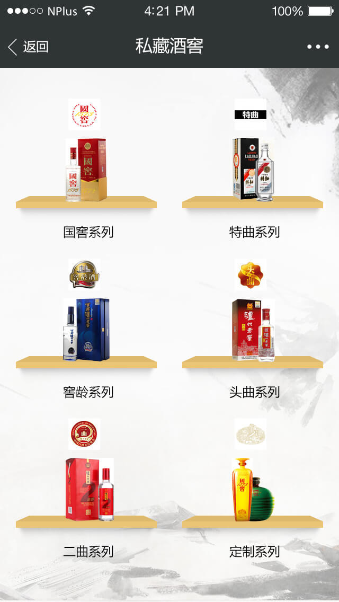
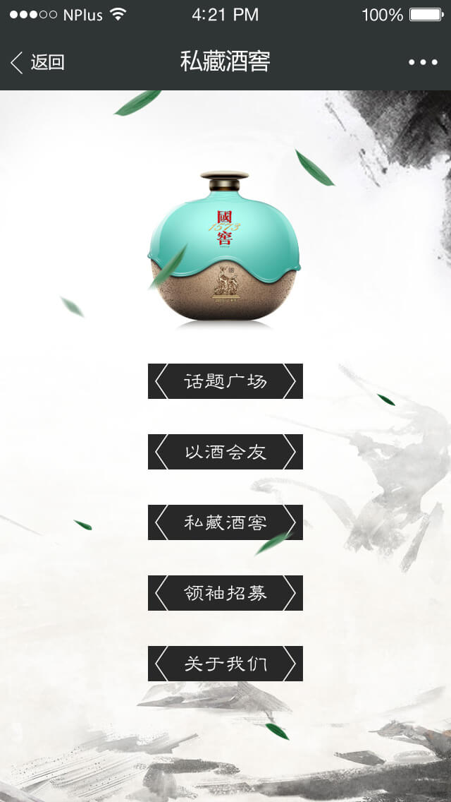
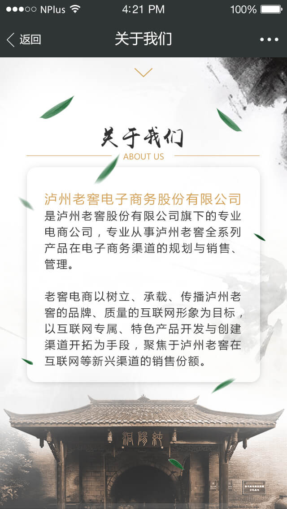

TIME
2016Y 07M 22D
2016年1月，NPLUS Digital无锡团队凭借着创新创意与数字营销经验，经过多轮比稿，成功斩获泸州老窖社群电商业务，正式成为泸州老窖社群电商独家合作伙伴，负责其社群电商搭建业务，助推其获取更高的品牌知名度与用户关注度，同时也为流通渠道和终端客户创造新的价值。

2016年7月，泸州老窖社群电商平台正式上线。与传统电商不同，泸州老窖社群电商对用户进行了社群化改造，充分激活企业的沉淀用户，并利用微信平台充分调动社群成员的活跃度和传播力。
项目上线初期，泸州老窖招募筛选出一批“意见领袖”，通过他们去寻找到更多粉丝、爱好者，促成更多销售。让粉丝接受品牌价值及文化洗礼后，成为代言者和传播者。“意见领袖”则通过发展粉丝、推荐产品、产生销售，从而在平台上获得更多参与感，更大的权益激励。

NPLUS Digital将会在未来持续与泸州老窖在移动互联网方面的应用进行合作，助力泸州老窖业务创新实践。
